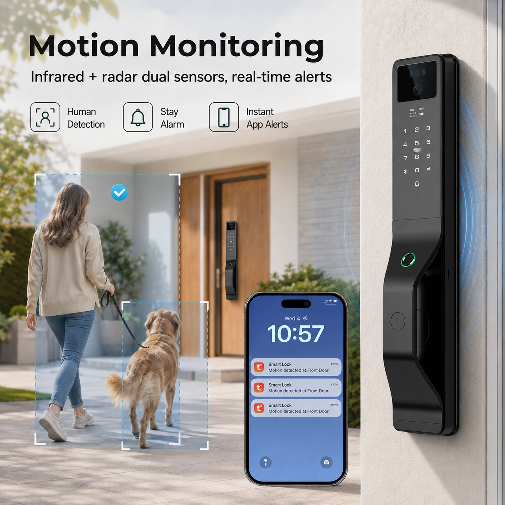
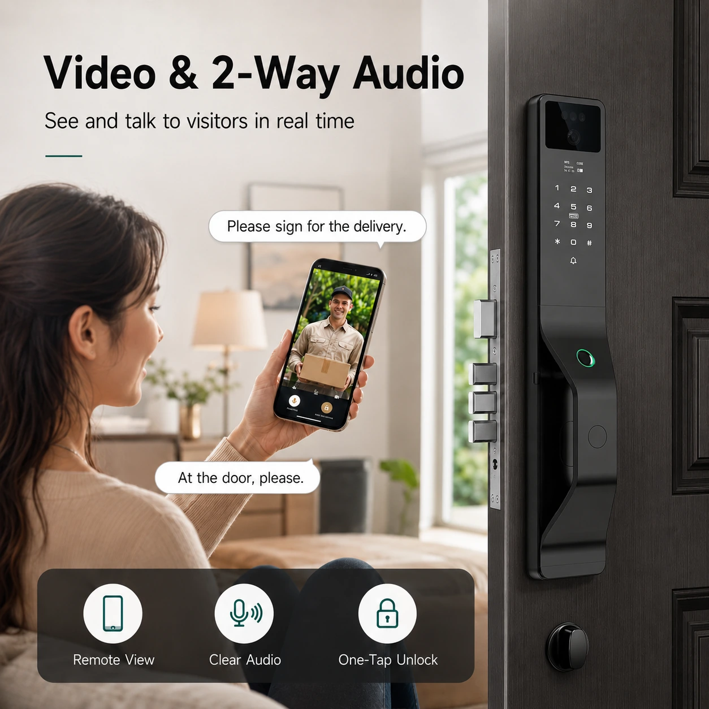

3D Face Recognition
Designed for buyers looking for a more advanced face-based entry experience.



BOLVRA SMART LOCK SERIES
3D Face Recognition Smart Lock
A modern face-recognition smart lock designed for premium residential, villa and project applications. This model supports smarter monitoring and communication features for customers who want a more advanced smart-entry solution.
Designed for buyers looking for a more advanced face-based entry experience.
Motion monitoring and app alert functions support smarter access management.
Suitable for residential, villa and project-based smart-entry solutions.
It is intended for distributors, installers and project buyers serving residential, villa and premium access applications.
The listed feature set includes video intercom and two-way audio.
Send the project requirements through the quote form or WhatsApp and confirm the needed configuration with BOLVRA.
Tell us your market, quantity and required access functions.